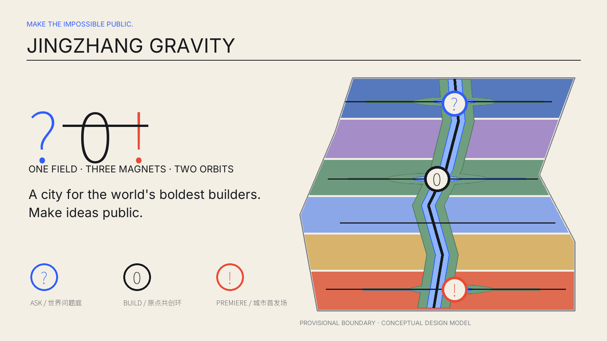
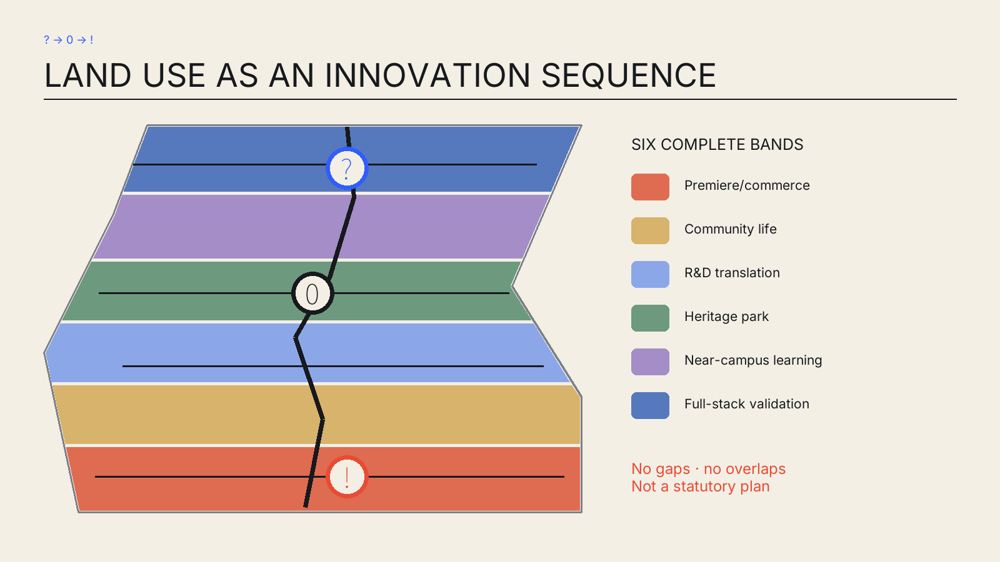
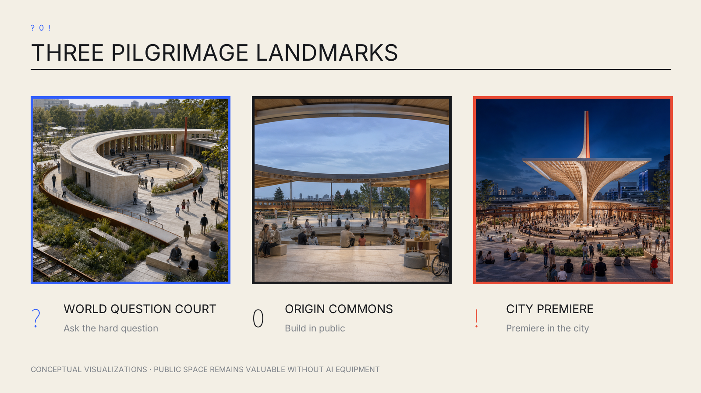
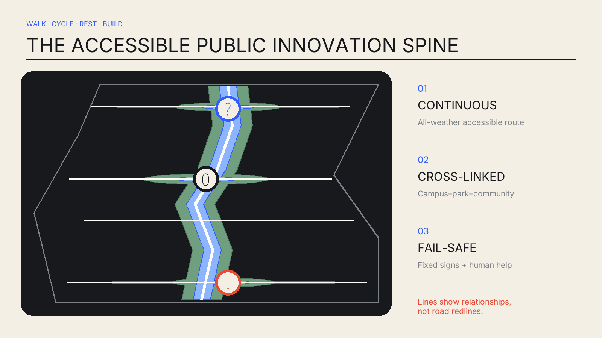
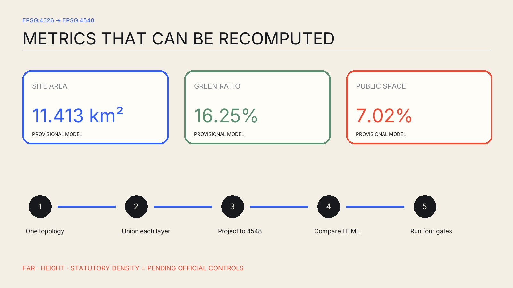

JINGZHANG GRAVITY / 京张引力场
A public innovation journey from world-class questions to open prototypes and city premieres: MAKE THE IMPOSSIBLE PUBLIC.
JINGZHANG GRAVITY / 京张引力场
Design Basis and Source List
The proposal sets an additional quality gate: surprise the world, read in three seconds as a thumbnail, explain itself in thirty seconds, and reveal the complete innovator journey in three minutes. Its name is JINGZHANG GRAVITY; its line is MAKE THE IMPOSSIBLE PUBLIC. / 把不可能，做成城市日常。 The symbol ? → 0 → ! means ask a world-class question, build an open prototype at the AI origin, and premiere it in the real city. This is a spatial, operational and governance sequence—not surface branding. Source Standard
The evidence base is the official announcement, cleared Agent taskbook, repository source registry, local standard snapshots and provisional geometry. As of 31 August 2026, the repository still has no trusted exact official polygon. SITE-001 and the three key areas are low-confidence temporary bases; OSM is background context only and never supports redlines, area or planning controls. Source Source Spatial data

The boundary is a faint dashed constraint; the high-contrast layer is design intent. Experience images are conceptual, not factual site evidence. GeoJSON, JSON and reproducible calculations take precedence over images, HTML and PDFs.
Three-Level Scope Framework
At the coordinated-research scale, the proposal forms a university-origin–validation–open-source–city-premiere–global-communication loop. At the overall-design scale, the railway heritage park becomes a continuous public innovation field. At key-area scale, three magnets test the interfaces of research, life and public launch. The Zhongguancun service wing supplies talent, capital, compute, data and professional services; the Xiaoyue River wing supplies lived scenarios and public feedback. Source Depth
The structure is “one field, three magnets, two orbits”: one continuous heritage park; World Question Court, Origin Commons and City Premiere; an outer orbit for research/capital/industry services and an inner orbit for residents, students and visitors. Durable civic space survives beyond screens or devices. Spatial data Depth

Coordinated Research Area: Industry and Future City Research
Jing-Zhang Gravity does not copy an “innovation-park look.” It translates seven mechanisms: research-industry adjacency, shared facilities, industrial-heritage renewal, international soft landing, open ground floors, year-round community and bookable validation. They are comparative references, not site controls.
| Case | Mechanism | Jing-Zhang translation |
|---|---|---|
| Kendall Square | Research–industry–street adjacency | Put shared research facilities and public ground floors within walking distance Source |
| Station F | Large shared infrastructure | Use low-threshold build tables, services and soft landing to shorten startup time Source |
| Singapore one-north | Work–live–learn mix | Use two wings to add daily life and real-world scenarios, not an isolated tech park Source |
| King’s Cross Knowledge Quarter | Knowledge alliance and heritage renewal | Make railway heritage the shared identity and year-round civic base Source |
| 22@Barcelona | Incremental industrial-district renewal | Use open ground floors, mixed functions and phasing for long-term change Source |
| MaRS Discovery District | Research commercialization and public convening | Embed professional services in the commons Source |
| High Tech Campus Eindhoven | Shared labs and open innovation | Make costly validation facilities bookable and auditable commons Source |
Together they create a public innovation chain. Questions enter World Question Court, face red-team, ethics and manufacturability checks, gather maintainers and users at Origin Commons, and meet the public and international peers at City Premiere. Failures are also reviewed openly, making the city a learning infrastructure. Depth Standard
Overall Design Area: Urban Renewal and Regulatory-Plan-Level Urban Design
All design layers derive from one provisional topology. Six complete north-south bands organize premiere/commerce, community life, R&D translation, heritage park, near-campus learning and full-stack validation. Land use covers the boundary without gaps or overlaps; green, public-space, building and phase layers derive from the same base. Spatial data Depth
The interim model measures 11.413 km², with 16.25% green space and 7.02% public space. These are EPSG:4548 design-model calculations from submitted geometry—not substitutes for the announced approximate area and not statutory controls. Metric Metric Metric
The renewal order is retain first, low-disturbance adaptation, reversible infill, and only then further review. Without ownership, existing-building, regulatory, heritage, municipal and engineering data, no real parcel receives a demolition/renovation conclusion. Standard Depth
Detailed Design of Key Areas
? World Question Court (Zhongzhiyuan) combines a curved civic forum, validation garden, hardware clinic and deliberation arcade. Walking, lunch, discussion and accessible rest come first; testing equipment is replaceable. Spatial data
0 Origin Commons (AI Origin) is an open ring with a deliberately empty centre, gathering build tables, multilingual exchange, youth life, childcare and a staffed analog help desk. Visitors are not merely received; they can join immediately. Spatial data
! City Premiere (Dazhongsi) uses a slender civic canopy and habitable steps to make an unmistakable silhouette. Market, culture, launch and international exchange occupy open ground floors. Spatial data

All are conceptual suggestions requiring exact polygons, transport, ownership and engineering evidence before professional development. Depth
AI Innovation Ecosystem, Personas, and AI+ Scenarios
Eight personas are co-authors of the district, not traffic segments. Every scenario answers why a world-class innovator would come and what an ordinary resident gains.
| Persona | Need | Space–operation response |
|---|---|---|
| Frontier researcher | Trusted evaluation, peer challenge, quiet work | World Question Court + 24/7 research commons |
| Robotics founder | Safe trials, hardware debugging, first users | Validation garden + hardware clinic + premiere |
| Open-source maintainer | Collaboration, documentation, durable community | Origin Commons + contribution rings |
| International team | Multilingual landing, short stay, partner matching | Science salon + soft-landing desk |
| Student | Learning, making, role models, affordable life | 72-hour build residency + youth living |
| Resident and carer | Low-disruption daily life, children, trusted service | Park routine + staffed desk |
| Older/disabled person | Access, traditional channels, exit rights | Continuous accessible loop + human navigation |
| Operator/reviewer | Authority, stop rights, audit trail | Scenario control + public retrospectives |
Twelve scenario cards span research, everyday life, culture and premiere. Three Testing and Validation Scenarios explicitly provide final human authority, a non-AI baseline, stop conditions and an exit path. Source Standard
| No. | Scenario | Place | Type | Governance and experience |
|---|---|---|---|---|
| 01 | Open model evaluation | Zhongzhiyuan | TVS | Public benchmarks and red teams; professional release authority; human-review baseline; stop on leakage, bias or unexplained anomaly; teams may withdraw model and data. |
| 02 | Embodied-AI safety trial | Zhongzhiyuan | TVS | Graded trials in a soft-separated garden; on-site safety officer has final authority; teleoperation baseline; stop on boundary breach, link loss or human entry; physical power-off and evacuation exit. |
| 03 | AI hardware clinic | Zhongzhiyuan | SERVICE | Shared tools, repair and manufacturability advice without vendor lock-in. |
| 04 | Responsible-AI assembly | Zhongzhiyuan | CIVIC | Researchers, residents and reviewers deliberate high-impact scenarios; publish minutes with sensitive details removed. |
| 05 | 72-hour global build residency | AI Origin | BUILD | Question intake, teams, prototypes and public retrospectives, with quiet exit spaces. |
| 06 | Multilingual science salon | AI Origin | COMMUNITY | Machine translation assists only; bilingual people confirm consequential decisions; paper agenda remains. |
| 07 | Inclusive learning studio | AI Origin | LEARNING | Large type, captions, tactile models and volunteers; screen-free participation available. |
| 08 | Health and ageing navigation | AI Origin | TVS | Route/service information only; staff or clinicians decide; paper maps and staffed counter as non-AI baseline; stop on misleading or health risk; one-step human handoff and session deletion. |
| 09 | AI-native market | Dazhongsi | MARKET | Transparent prototype feedback; cash and human channels remain; no profiling without consent. |
| 10 | Railway culture co-creation | Belt | CULTURE | Oral histories and public archives without fabricated history or uncleared portraits. |
| 11 | Climate public-realm steward | Belt | CLIMATE | Public environmental data suggests shaded/rain routes; no tracking; fixed signs are fallback. |
| 12 | Global Premiere Week | Dazhongsi | EVENT | Invitation programme plus public days; publish failures and governance records; no procurement or investment promises. |
Health and ageing navigation retains staffed and paper channels. This uses the Accessibility Law only within its listed public-service contexts and treats the 2020 elderly-smart-tech plan as background, not as proof of local implementation in 2026. Standard Source
Land Use, Building Scale, and Retain-Renovate-Demolish Strategy
Codes follow the repository’s national classification reference: R&D 0802, education 0804, community service 0702, commerce 0901 and park green 1401. They express a reference structure, not an approved plan. Standard Spatial data
Twelve building prototypes support labs, R&D, repair, deliberation, global builds, multilingual exchange, inclusive learning, youth living, market, culture, transit and launches. Their footprints are recomputable but do not represent existing parcels. FAR, height and statutory building density remain pending official data. Spatial data Metric Depth
Transport, Rail, Municipal Infrastructure, and Public Services
A north-south walking–cycling–accessible spine links three cross-connections for campuses, parks, communities and transit, plus one community loop. Lines express relationships, not road redlines or engineering alignments. Spatial data Depth

Edge compute, repair, storage, stormwater and event power use a shared-interface/service-band concept without inventing loads or pipe capacity. Every system can be bypassed; lighting, wayfinding and emergency calls retain non-AI modes. Depth Source
Blue-Green Network, Public Space, and Urban Character
A narrow continuous heritage greenway, three magnet gardens and rain-garden branches form the green system. Public space is the more intensively used walking and event interface within it. They may overlap, but each metric uses union area to avoid double counting. Spatial data Spatial data
Character comes from railway carbon, paper cream, gravity blue and premiere vermilion—not temporary “future” decoration. The ?0! line is at once identity, route, seating edge, canopy structure and event score. Replaceable plaques and public archives record contribution without locking short-lived equipment into architecture. Standard Depth
Renewal Projects, Implementation Policy, and Phasing
Phase 1 uses reversible installations and operations to test the public journey; Phase 2 adapts and adds facilities only where rights and professional constraints are known; Phase 3 sustains research, events and governance. These are trigger-based suggestions, not a fixed government commitment. Spatial data Depth
The package includes the accessible green spine, three durable magnets, shared validation facilities, two service wings, contribution rings and Global Premiere Week. Each passes co-design, a non-AI baseline, professional review and exit planning before construction is considered. Depth Source
Metrics, Area Recalculation, and Compliance Matrix
The core geometry metrics are site_area_sqm=11412825.386, green_ratio=0.162513 and public_space_ratio=0.070219. Exchange uses EPSG:4326; area uses EPSG:4548; green and public space are unioned before division. Metric Depth

The compliance matrix covers 23 announcement and Agent requirements. Five mandatory standards are addressed and fifteen depth items are complete within current public evidence. “Complete” never promotes unknown controls into facts. Standard Depth
Risk, Copyright, and Compliance
Boundary truth is the primary risk: the provisional polygon has documented uncertainty against OSM background checks, so every ratio, location and phase must be regenerated after official polygons arrive. Other gaps include ownership, existing conditions, heritage, transport, utilities, fire and subsurface data; scenario risks include privacy, bias, misinformation and lock-in. Source Depth
Every spatial move is an open co-creation concept, reference scheme or material for professional teams to deepen. It is not an approved plan, government decision, investment promise, confirmed event or engineering feasibility conclusion. Generated views are conceptual. Noto Sans SC and Inter are redistributed as OFL subsets; generation tools, rights and limits are recorded in the copyright statement. Source Source Source
References
The complete source index is in sources.json; assumptions are in assumptions.json; metric definitions, methods and rounding are in metrics.json; and task, professional-standard and design-depth crosswalks are in the three matrices. The official announcement, cleared agent taskbook, repository registry and local standard snapshots define the assignment, professional baseline and evidence boundary. Source Source Source
The repository's provisional boundary is used only to build a publicly recomputable conceptual design model: its areas cannot replace an official redline, statutory controls or survey data. Source The seven institutional case sources—Kendall Square, Station F, one-north, King's Cross Knowledge Quarter, 22@Barcelona, MaRS and High Tech Campus Eindhoven—support mechanism translation only, never site controls or performance promises. Generated imagery communicates future experience; structured JSON and GeoJSON remain the auditable evidence. Source purpose, retrieval date, licence and limits are registered item by item.